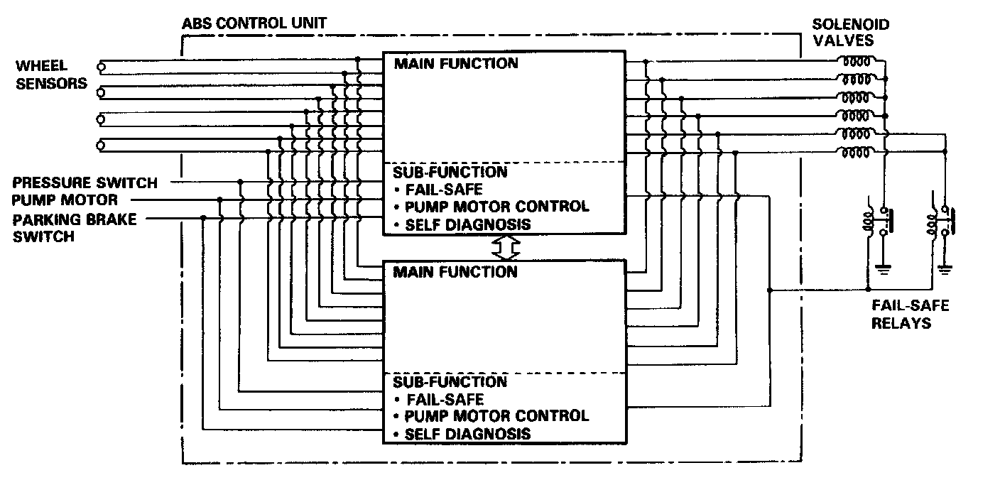

Electronic Brake Control Module: Description and Operation

ABS Control Unit
The ABS control unit consists of a main function section, which controls the operation of anti-lock brake system, and sub- function, which controls the pump motor and "self-diagnosis."
1. Main Function
The main function section of the ABS control unit performs calculations on the basis of the signals from each wheel sensor and controls the operation of the anti-lock brake system by puffing into action the solenoid valves in the modulator unit for each front brake and for the two rear brakes.
2. Sub-Function
The sub-function section gives driving signals to the pump motor and also gives "self-diagnosis" signals, necessary for backing up the anti-lock brake system.
Features/Construction/Operation
1. Self-Diagnostic Function
Since the anti-lock brake system modulates the braking pressure when a wheel is about to lock, regardless of the driver's intention, the system operation and the braking power will be impaired if there is a malfunction in the system. To prevent this possibility, at speeds above 6 mph (10 km/h), the self diagnosis function, provided in the sub-function of the ABS control unit, monitors the main system functions. When an abnormality is detected, the ABS indicator light goes on.
There is also a check mode of the self-diagnosis system itself; when the ignition switch is first turned on, the ABS indicator light comes on and stays on for a few seconds after the engine starts, to signify that the self-diagnosis system is functional.
2. Fail-Safe Function
When abnormality is detected in the ABS control system by the self-diagnosis, the solenoid operations are suspended by turning off the relay (fail-safe relay) which disconnects the ground circuits of all the solenoid valves to inhibit antilock brake system operations. Under these conditions, the braking system functions just as an ordinary one, maintaining the necessary braking function. When the ABS indicator light is turned on, it means the fail-safe is functioning.